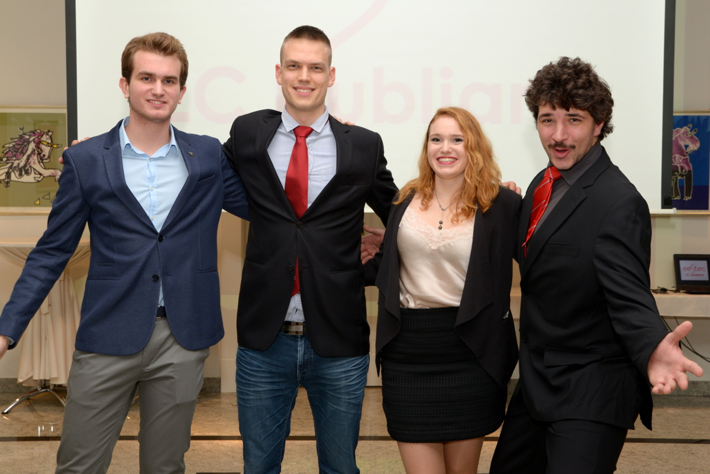

I was following the feed about the Congress OC 2017 elections on Facebook and suddenly I got a pop-up:”What do you think about us running for congress?” I got so excited, i was just laughing, shaking on my chair, walking around and saying Yes yes yeeesssss.
So here we are…We are elected...What now? Where to start? How to bring LC Ljubljana members the news about what we will be doing for the next year? Who is going to be in the organizing team? All these questions went through my head…
When LC Ljubljana representatives returned back to Ljubljana, a couple of board members and other enthusiastic members who wanted to be a part of an OC arranged a meeting. We brainstormed about fundraising and which grants to pursue and made a basic financial projection, we discussed when to start PR and what are we going to need for the design.
But most importantly, who was going to be in the team? And what did we expect from them? We agreed this should be decided by all members of LC Ljubljana, so we postponed it until the General LC elections where the head organiser would be elected. But as the elections were still a month away and some stuff had to be done before, a few of us started preparing the terrain for congress in advance.
Blaž and I started searching for accommodation and conference halls where the GMs would be held, going to meetings, coffees, lunches and so on... We didn’t know what to expect, we thought that almost every hotel has a congress hall, but we were wrong. It was quite hard to find a conference hall with the capacity for so many people. So we thought of just renting a conference hall and being in a hostel. But this presented additional problems - finding adequate restaurants and a nearby conference hall for a reasonable price (less than 1000€ a day is hard) etc. After some research we realised that a hotel was a better option in many ways. We could only find one hotel that was within our price range. We went there on a few meetings, where we discussed our plans and explained all about EESTEC: how we are a non-profit organisation, and that needs to raise money so we could host our members in their hotel. They were really cooperative and open to suggestions so we easily came to an agreement.
Meetings with the hotel were actually done during lunch - we first talked about random topics and only later on touched the important subjects. Thumbs up for customer experience :P. So participants be prepared, the service and the food are going to be top notch ;)ELECTION DAY
We had our LC elections and the new board was elected. Now it was time to elect the Head organiser of the Congress. Blaž and me were the only candidates, but since I was just elected as a member of the board I resigned from the candidature. HE prepared an awesome speech that showed he was the perfect candidate for it, there was just one small obstacle...He was going on Erasmus exchange in Novi Sad for the next semester. How would he able to organise such a big and important event, with so many nuances, details and unknown variables from a different city… We knew that he would need a strong core team that would help him with the tasks in his absence.
CORE TEAM
It was time to start planning properly!!! As is usual in our LC, a call for team members was sent out. Blaž wrote a long email, in which he pointed out all the benefits of organizing the congress (being awesome, new experience, personal growth, and after all, a nice addon to the CV :P…) as well as the difficulties that we would face (no sleep, all the arguments and stress, not being able to attend the congress parties (this one was the hardest to give up :P )). But all in all it still sounded epic so a lot of us applied. We did not know what we were getting in.
The next step were the interviews with Blaž, and those were the hard ones :D
"It was a dark and stormy night...We were invited to an empty abandoned house in the middle of the Campus. Each of us was brought up into a dark room with a chair, a table and a water bottle on it. I still remember sitting there, waiting and waiting. The hours passed by and I was ready to break when suddenly I heard steps coming closer and closer. Someone entered the room and pointed a desk lamp in my face so I could not see him. When he started to speak, he had a deep authoritative voice so I figured it had to be Blaž... He played both the GOOD cop and the BAD one…It is still to painful for me to go into the details about what went on there … I heard that some of the candidates never made it out of there (may their EESTEC spirit rest peacefully) I must have been one of the lucky survivors who cooperated and gave all the right answers to make it to where I am today.
Now we are friends, better yet a family and this experience has made us strong and determined to reach our goal no matter what. To organise the MOST EPIC Congress ever."
Blaž, Leon, Saša, Živa - The SCOC Core team was born!!!
 SCOC core team (left to right) - Leon, Blaž, Živa, Saša